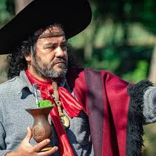

Fui criado na campanha
Em rancho de barro e capim
Por isso é que eu canto assim
Pra relembrar meu passado
Eu me criei arremendado
Dormindo pelos galpão
Perto de um fogo de chão
Com os cabelo enfumaçado
Quando rompe a estrela d'alva
Aquento a chaleira já quase no clariá o dia
Meu pingo de arreio relincha na estrevaria
Enquanto uma saracura
Vai cantando empoleirada
Escuto o grito do sorro
E lá do piquete relincha o potro tordilho
Na boca da noite me aparece um zorrilho
Vem mijar perto de casa
Pra inticá com a cachorrada
Numa cama de pelego
Me acordo de madrugada
Escuto uma mão pelada
Acoando no banhadal
Eu me criei xucro e bagual
Honrando o sistema antigo
Comendo feijão mexido
Com pouca graxa e sem sal
Quando rompe a estrela d'alva
Aquento a chaleira já quase no clariá o dia
Meu pingo de arreio relincha na estrevaria
Enquanto uma saracura
Vai cantando empoleirada
Escuto o grito do sorro
E lá do piquete relincha o potro tordilho
Na boca da noite me aparece um zorrilho
Vem mijar perto de casa
Pra inticá com a cachorrada
Reformando um alambrado
Na beira de um corredor
No cabo de um socador
Com as mão rodeada de calo
No meu mango eu dou estalo
E sigo a minha campereada
E uma perdiz ressabiada
Voa e me espanta o cavalo
Quando rompe a estrela d'alva
Aquento a chaleira já quase no clariá o dia
Meu pingo de arreio relincha na estrevaria
Enquanto uma saracura
Vai cantando empoleirada
Escuto o grito do sorro
E lá do piquete relincha o potro tordilho
Na boca da noite me aparece um zorrilho
Vem mijar perto de casa
Pra inticá com a cachorrada
Lá no santo do capão
O subiar de um nambú
Numa trincheira o jacú
Grita o sabiá nas pitanga
E bem na costa da sanga
Berra a vaca e o bezerro
No barulho dos cincerro
Eu encontro os bois de canga
Quando rompe a estrela d'alva
Aquento a chaleira já quase no clariá o dia
Meu pingo de arreio relincha na estrevaria
Enquanto uma saracura
Vai cantando empoleirada
Escuto o grito do sorro
E lá do piquete relincha o potro tordilho
Na boca da noite me aparece um zorrilho
Vem mijar perto de casa
Pra inticá com a cachorrada
